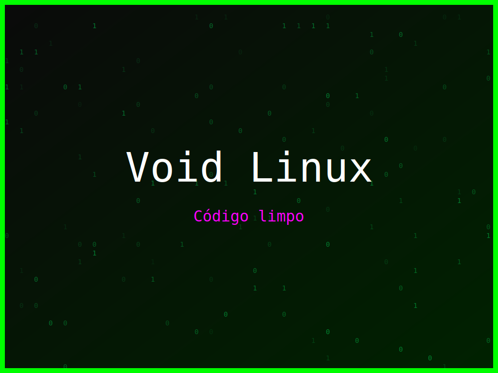

<section class="post-content">


    <div class="details-container">
        
        
        <ul class="details-list">
            <li><strong>Autor:</strong> piolinux</li>
            <li><strong>Descrição:</strong> Wallpaper Void Linux que celebra a beleza do código limpo e a liberdade do software.</li>
            <li><strong>Distro:</strong> Void Linux</li>
            <li><strong>Frases:</strong> Coding is fun, Código limpo, Linux é liberdade</li>
            <li><strong>Tags:</strong> matrix, colorido</li>
        </ul>
        <a href="../galeria.html">Voltar para a galeria</a> ||
        <a href="../wallpaper40.svg" download="wallpaper-ubuntu-sentimento-de-matrix.svg">Baixar Wallpaper</a>
    </div>

</section>
